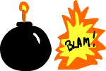

Today we'll be substituting those wretched little rectangles we've been working with until now and turning them in to things that MOVE! No, not move around the screen - we'll be turning them into characters and animating them like real video game characters should be animated. How do we approach this? Do we draw each frame out using arc(), lineTo, etc.? Well, we COULD, but that wouldn't be a whole lot of fun. No, that wouldn't be a whole lot of fun at all... let's start off by using some ready-made sprite sheets, prepared by yours truly, then later on when we talk about advanced sprite sheet techniques, I'll give you some info about where you can make your own.
So we'll start REALLY simple and go with a 2-frame sheet. Just download it directly from this page (right click / CTRL click), then save it in the same folder you're going to put your HTML file in. Here it is in all its glory:
(Note that the dimensions are 150 X 100.)
Now, we saw in a different lesson that there are three ways of drawing an image to the canvas. Remember? Well, we only covered two because I figured that the third method would be more appropriate to discuss in conjunction with a discussion on sprite sheets, so here we are! The day has arrived!
drawImage(imageName, sourceX,sourceY,sourceWidth,sourceHeight,destX,destY,destWidth,destHeight);
As you can see, this particular drawImage method has 9 arguments, but they're pretty easy to remember:
First we have the name that we attributed to the image when we created a new Image object.
The second through fifth arguments are the x,y,width and height value of our source image. In other words, which PART of the image do we want to get our image info from? You see, we're creating a hypthetical rectangle on top of our image. Whatever is inside that rectangle willl be used in our output. Clear?
The remaining four arguments are the x,y,width and height of the selection you just made, but placed onto the canvas. By changing these width and height values we can scale the selection to our liking. Still cliear?
Just to show you what I mean, why don't we punch this code into our text editor, save it, make sure the bomb.png file is in the same directory, then give it a run. What do you see?
Now no sleight of hand here! I didn't just cut my original bomb image in half with a saw! All I did was specify in the second to fifth arguments that I needed a selection from my original image that started at 0,0 (x,y), had a width of 75 (which is one half of the width of my image), and a height of 100 (the height of my image). Once this was done, I could take my half image and stick it anywhere I pleased by using the sixth to ninth arguments. Actually, if I wanted to, I could tweak the eighth and ninth arguments to stretch my image out. Let's give that a shot for the fun of it.
Punch this line into your code instead:
That's not a bomb anymore, that's for sure!
Let's set it back to normal so we don't get ourselves confused.
So that said and done, how do we go about making an animation ot of this? Well, it's actually VERY simple!
To make the explosion happen on its own we'll need a timer. In this case setTimeout works fine. Now watch what I do...
Note that the first version of the image is added once the screen loads. This is the bomb image. A setTimeout is then applied which goes off two seconds (2000 ms) after it is called. Inside out timeout function we added a clearRect which we've seen resets the stage, then a second drawImage which will be drawn above this clearRect.
The second drawImage, however, is different. Instead of starting at 0,0 for our source rectangle, it starts from 75, which is half the width of our bomb.png image. This means that our image is being clipped not from the left-hand side, but 75 pixels in to the right which happens to be the starting X point for the second image in our little sprite sheet.
Making sense?
If we wanted to make a sprite sheet that was set into motion by some kind of event WE initiate, all we'd have to do is set it to an mouse click or keyboard "keydown" event or something of the sort. We'll see plenty of these in the lessons that follow.
Now two stupid frames are fine and dandy, but what if we wanted more than one?
Here it may seem more complicated, but it really isn't. All that's necessary is to use a couple of lines of code and and if statement. When we look at advanced sprite sheets, we'll have a handy little formula so we can skip through HUGE sprite sheets with multiple rows effortlessly.
First let's do a Jr. sprite sheet which has 5 frames on the same row. Take a look at the next (gorgeously drawn) image to see what I mean.
(Note here that the dimensions are 375 X 100. This means that we have 5 frames which are 75 pixels each.)
Hey, a glass emptying - how existential!
What we'll be doing in this simple exercise is allowing our browser to skip through these frames one at a time in order to give the effect of animation. We'll create a global variable called increment and assign it an intial value of 0.
We'll also be changing the setTimeout to a setInterval and assign it an interval of 300ms.
On every iteration of increment, we'll be adding 75 (the width of each frame in the sheet) to our increment value. This will be the activity necessary for switching the frames.
Finally, at the end of the code we'll have an if statement that blocks increment from moving beyond the last frame (i.e. a value of 300).
Sound simple enough? It is!
Here's the code:
It's almost the same setup as the example with the last one, right?
Give it a run and enjoy the glass of orange juice (or beer if that's your thing) slowly be consumed. If you want something a little faster, all you have to do is change the interval value to something a bit lower.
There you have it - all you need to know to get a simple sprite sheet working. Now I'm going to keep this lesson short because I want to do cover something that will make your life a WHOLE lot easier, not just for sprite sheets, but for almost anything you do in Javascript, namely OBJECTS.
After we've covered objects, we'll go back and look at sprite sheets from a different angle, because custom-made objects will revolutionize how we work with variables in javascript.
So enjoy this little intro to sprite sheets and be prepared for something even more exciting next time!
So stay tuned and I hope you enjoyed! As always, thanks for following along! Code didn't work for you? Hate me? Are you my illegitimate child? Send input anytime to me on Twitter: @benwhi.
Until next time!
-Ben
@benwhi
Onward to Lesson Twenty Three!
Back to Lesson Twenty One!
Back to Index